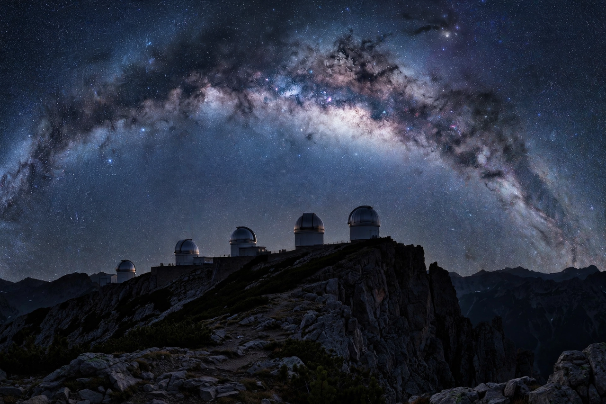

Astronomy

[Image: the Milky Way arching over a mountaintop observatory with several telescope domes silhouetted against the stars]Astronomy is the scientific study of celestial objects and phenomena beyond Earth's atmosphere — stars, planets, galaxies, nebulae and the universe as a whole, including its origin and evolution (cosmology). It is one of the oldest sciences, practised in ancient Babylon, Egypt, Greece, China, India and Mesoamerica, and it split from astrology in the early modern period as the scientific method developed.
Astronomers observe the universe across the whole electromagnetic spectrum — radio, infrared, visible, ultraviolet, X-ray and gamma-ray — and, since 2015, through gravitational waves as well.
History
Ancient astronomers tracked the motions of the Sun, Moon and planets for calendars and navigation. Nicolaus Copernicus proposed the heliocentric model in 1543; Galileo's telescopic observations (1609–10) revolutionised the field, and Johannes Kepler and Isaac Newton supplied its laws of motion and gravitation.
In the twentieth century, Edwin Hubble showed that galaxies lie far beyond the Milky Way and that the universe is expanding, grounding the Big Bang theory; radio, space-based and digital astronomy multiplied what could be observed.
Branches
Observational astronomy includes optical and radio astronomy and space telescopes such as Hubble and the James Webb Space Telescope. Theoretical astronomy and astrophysics model stellar structure, galaxy formation and cosmology. Planetary science, astrobiology and exoplanet research — over five thousand exoplanets are now known — are thriving modern branches.
Amateur astronomers remain important, discovering comets, supernovae and asteroids, and contributing to citizen-science projects.